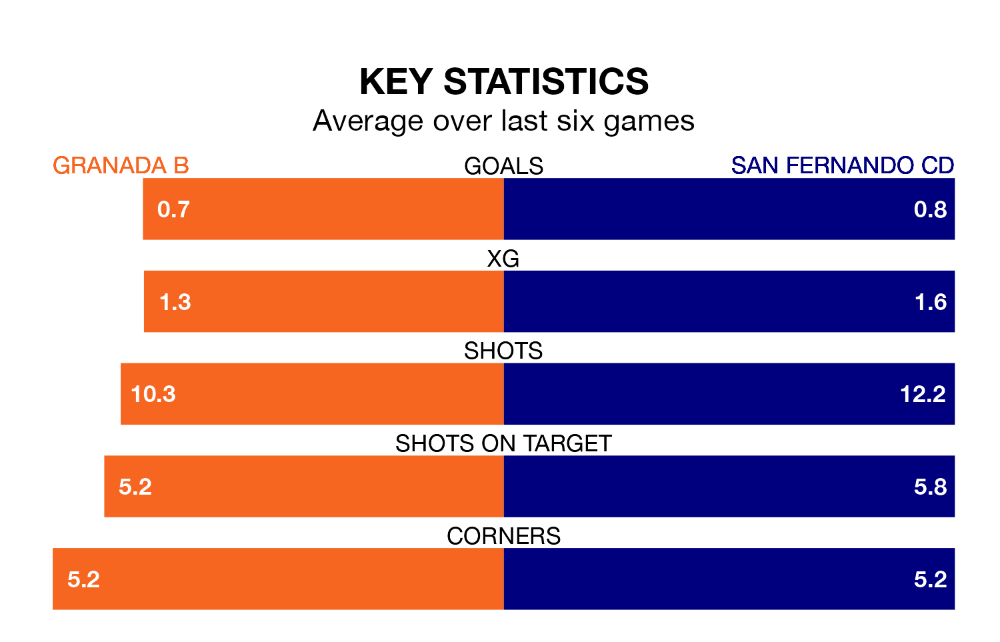

Granada B welcome San Fernando CD to the Estadio Miguel Prieto Garcia on early Sunday looking to pick up points to end their three-game losing streak.
Granada B's struggles have left them with just three points from their last six Primera Division RFEF Group 2 matches, while their opponents have earned eight from a possible 18.
Granada B are bottom of the table after 32 games, of which they have won three and drawn six, earning 15 points.
San Fernando CD are four places ahead of the home team in 16th, with nine wins and eight draws putting them on 35 points.
In the last 10 years, Granada B and San Fernando CD have played each other on nine occasions. Granada B won two of them, San Fernando CD one, and they drew six times.
On average, Granada B scored 1.2 goals and San Fernando CD 1.1 in those matches.
Their last meeting was on October 15, when San Fernando CD won 2-1 at home.
With 18 goals in 32 games so far this season, Granada B are the league's second-lowest scorers with 0.6 goals per game. And they are conceding more than average, letting in 52 goals at a rate of 1.6 per game.
The visitors are also below average scorers, with 1.0 goal per game, compared to a league average of 1.1. They have conceded 1.2 goals per game.
In Daniel Aquino Pintos, San Fernando CD have one of the league's most on-form strikers so far this season. He has notched seven goals in 22 appearances, to sit sixth in the scoring charts.
His goal rate of one every 256 minutes is slightly quicker than that of Julio Martínez Cortés, Granada B's top scorer with a goal every 273 minutes, and a total of three goals in 14 games.
Granada B's last match was on Sunday, a 3-0 loss against CD Castellón.
San Fernando CD drew 1-1 with Intercity last time out, on April 13, with Cristian Herrera i Fontanella on the scoresheet.
Updated: 11:31 (UTC), 15/04/24